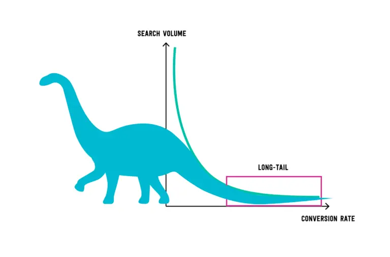

불투명성으로 오랫동안 비판을 받아온 넷플릭스가 1년에 두 번씩 종합적인 시청자 인사이트를 공개하기로 했습니다. 12월 13일에 공개된 넷플릭스의 첫 보고서에는 18,214개의 타이틀과 타이틀 별 시청 시간을 공개했습니다. 넷플릭스는 앞으로 스트리밍 환경의 투명성 부족 문제를 해결하겠다고 약속했습니다.
넷플릭스 CEO 테드 사란도스는 과거 넷플릭스의 투명성 부족이 할리우드에서 불신을 키웠다고 인정하고 상세한 시청자 데이터로 새로운 신뢰를 얻겠다는 목표를 세웠습니다.
그래서 넷플릭스는 앞으로 1년에 두 번씩 시청자 선호도에 대한 상세 보고서를 발표할 예정입니다.
넷플릭스 시청 시간 Top 10
12월 13일에 공개된 상반기 보고서(2023년 1월~6월)에는 18,000개 이상의 타이틀과 약 1,000억 시간의 시청 데이터가 담겨있습니다. 보고서에 담긴 데이터는 상반기 기간동안 전 세계에서 50,000시간 이상 시청한 모든 타이틀(18,214개)을 대상으로 합니다. 18,214개의 타이틀의 총 시청 시간은 934억 5,520만 시간에 달합니다.
Rank
Title
Hours Viewed
1
The Night Agent: Season 1
812,100,000
2
Ginny & Georgia: Season 2
665,100,000
3
더 글로리
622,800,000
4
Wednesday: Season 1
507,700,000
5
Queen Charlotte: A Bridgerton Story
503,000,000
6
You: Season 4
440,600,000
7
La Reina del Sur: Season 3
429,600,000
8
Outer Banks: Season 3
402,500,000
9
Ginny & Georgia: Season 1
302,100,000
10
FUBAR: Season 1
266,200,000
넷플릭스는 정말 롱테일 법칙을 따를까?

넷플릭스는 롱테일 법칙의 대표 사례로 일컬어집니다. 롱테일 법칙은 잘 팔리지 않는 상품들도 충분히 수요가 있고, 이 수요로 인한 매출이 인기 있는 상품의 매출에 버금간다는 뜻이죠. 애플 아이팟의 음원 서비스, 아마존의 도서 판매에서 하위 80%의 매출액이 전체 매출의 50% 가까이 차지하는 현상이 롱테일 법칙이라고 할 수 있습니다. 기존의 파레토 법칙에서 무시되었던 긴 꼬리의 영역을 확보하자는 접근이 바로 롱테일 법칙입니다.
기존의 전통적인 시장을 지배했던 건 파레토 법칙입니다. 과거 기업이 투입할 수 있는 자원과 얻을 수 있는 정보량은 제한적이었습니다. 그들이 경영 실적을 높이기 위해선 선택과 집중이 필요했고, 그렇게 선택과 집중이 이뤄진 결과는 파레토 법칙으로 이어졌습니다. 파레토 법칙은 상위 20%가 전체 생산량의 80%를 차지한다는 법칙을 말합니다.
넷플릭스가 공개한 18,214개 타이틀과 타이틀 별 시청시간 데이터는 정말 롱테일 법칙을 따르고 있을까요?
참고로 넷플릭스가 공개한 보고서에 따르면 이번에 공개된 18,214개의 타이틀의 시청량은 넷플릭스 전체 시청량의 99%에 해당한다고 합니다. 50,000시간 이상 스트리밍된 타이틀만 포함된 수치인데, 넷플릭스 전체 타이틀 수와 크게 차이가 없는 것으로 추정되고 있습니다. 거의 모든 타이틀이 50,000시간 넘게 스트리밍 된다는 측면에서 롱테일 법칙을 따를 가능성이 높아 보이는데, 정말 그런지 확인해 봤습니다.
시청시간 상위 20%가 차지하는 비율
일단, 넷플릭스에서 제공해준 데이터를 watch_times라는 녀석에 넣었습니다. 그 중 시청시간은 Hours.Viewed라는 칼럼에 들어있고요. 시청시간 상위 20% 타이틀을 top_20_percent_index에 넣어 그 녀석들의 시청시간을 다 합친뒤, 전체에서 얼마나 차지하는지 확인해봤습니다.
library(readxl)library(dplyr)watch_times<-read_excel("watch_times.xlsx")top_20_percent_index<-ceiling(length(watch_times$`Hours Viewed`)*0.2)percent<-sum(watch_times$`Hours Viewed`[1:top_20_percent_index])/sum(watch_times$`Hours Viewed`)cat("The top 20% of titles account for", round(percent*100, 1), "% of the total watch time.\n")
The top 20% of titles account for 85.6 % of the total watch time.
상위 20% 타이틀이 전체 시청시간에서 찾이하는 비율은 85.6%로 전체의 80%를 넘습니다. 넷플릭스 시청시간에서 우리가 익히 알고 있던 파레토 법칙이 등장합니다. 익히 들어왔던 만큼 넷플릭스는 당연히 롱테일 법칙을 따를 줄 알았는데 말이죠.
절반을 차지하는 건 상위 몇 % 일까?
그렇다면 넷플릭스 시청시간은 얼마나 파레토 법칙이 강하게 작용하고 있을까요? 확인해 보기 위해 상위 그룹과 하위 그룹의 합이 같아지는 시점을 찾아보겠습니다. 특정 포인트를 찾아, 해당 포인트 윗 그룹과 아랫 그룹의 합이 threshold를 넘기지 않도록 세팅해 보겠습니다. 넷플릭스 시청시간 데이터를 고려해 threshold 값은 1,000만으로 잡아두었습니다.
# threshold_point 찾기 함수find_threshold_point<-function(watch_times, threshold){for(iin1:(length(watch_times)-1)){top_total<-sum(watch_times[1:i])bottom_total<-sum(watch_times[(i+1):length(watch_times)])if(abs(top_total-bottom_total)<=threshold){return(i)}}return(-1)}# threshold 세팅threshold_value<-10000000# threshold point 찾기threshold_index<-find_threshold_point(watch_times$`Hours Viewed`, threshold_value)cat("Threshold point found at index:", threshold_index, "\n")
Threshold point found at index: 713
함수를 돌려보니 713번째 타이틀이 threshold point로 계산됩니다. 713개라면 전체 18,214개의 3.9% 수준입니다. 정리해 보자면 넷플릭스의 상위 4% 타이틀들이 넷플릭스 전체 시청시간의 절반을 차지하고 있는 겁니다.
그렇습니다. 넷플릭스 시청시간은 롱테일 법칙이 아닌 파레토 법칙을 따르고 있습니다. 그것도 아주 강력하게요.